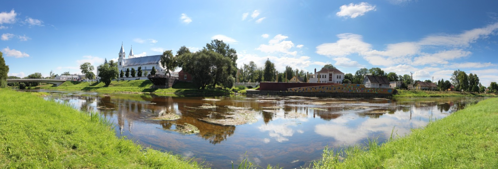

Apie miestą
Pasvalys – miestas šiaurės Lietuvoje. Pirmąkart miesto vardas paminėtas XIII a. pabaigoje. Vardo kilmė aiški – tai priešdėlio pa- vedinys iš upės, prie kurios įsikūręs miestas, vardo Svalia. Tai vandenvardinis vietovardis. Upės vardas siejamas su žodžiais svilti, svelti, garuoti.
Nuo 19 a. pabaigos Pasvalyje mineraliniais vandenimis buvo gydomi ligoniai.
Spaudos draudimo metais (1864–1904) įvyko tikras knygnešių sąjūdis Pasvalio krašte. „Knygnešių karalius“ biržietis Jurgis Bielinis iš kelionių su knygų ryšuliais savo vežimėlį ir arkliuką pastatydavo Pasvalio Avižonio sodyboje netoli Svalios. Ten knygnešiai jau patys išsidalindavo leidinius. Prie Pasvalio gyvenęs Petras Šimbelis net 32 kartus slaptai perėjo sieną, vis iš Prūsijos gabendamas knygas. Net ir dabar knygnešių talkininko Kazio Gumbelevičiaus sodybos gyvenamajame name Vaškų gatvėje tebėra išlikusios spaudinių slėptuvės.